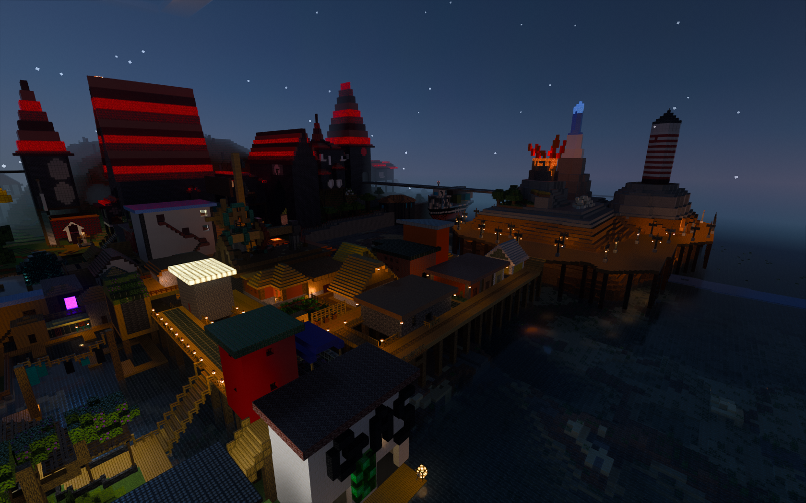

Boofarzia is a creative realm made by Bananabirdboy, he and multiple other players have been building on this world for
many years now, more infromation will be added to this site once BananaBirdBoy provides it.
^ A night time photo of lower shermanville
^ The pier, a region of lower sherman Ville
^ The furniture store & tree farm